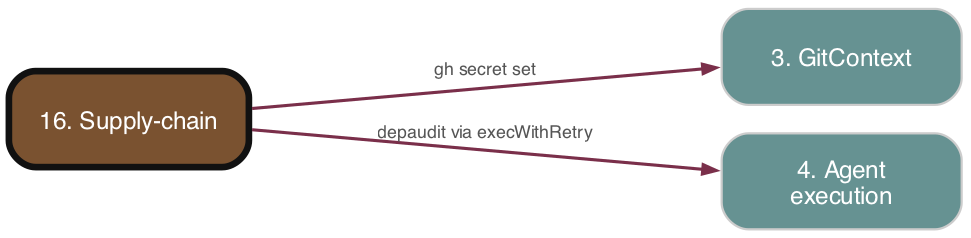

Supply-chain
As-is reference. Ground truth: source code.

Purpose
Integrates the external depaudit dependency-audit gate into ADW. During target-repo onboarding ADW runs depaudit setup (which scaffolds the gate, baselines findings, and installs the CI workflow) and propagates the SOCKET_API_TOKEN and SLACK_WEBHOOK_URL secrets from ADW's environment into the target repo's GitHub Actions secrets. ADW also ships the depaudit-triage Claude Code skill for interactively reviewing the findings the gate produces. The depaudit tool itself (scan/lint/gate logic, config schemas, OSV/Socket adapters) lives in an external repo (github.com/paysdoc/depaudit); ADW only orchestrates its setup and consumes its findings.
Responsibilities
- Run
depaudit setupin the target repo's worktree during init, failing soft if the binary is absent. - Resolve the owner/repo coordinates for the secret target (from
config.targetRepo, elsegetRepoInfo()fallback). - Propagate
SOCKET_API_TOKENandSLACK_WEBHOOK_URLfrom ADW's process env to the target repo's GitHub Actions secrets viagh secret set, skipping any unset secret and recording warnings/skips. - Provide the
depaudit-triageskill (ADW-side only,target: false) that walks.depaudit/findings.jsonand writes acceptance entries / files issues.
Key Files
| Path | Role |
|---|---|
| --- | --- |
adws/phases/depauditSetup.ts |
The executeDepauditSetup phase: runs depaudit setup, propagates the two secrets, returns a result struct. |
| --- | --- |
adws/__tests__/depauditSetup.test.ts |
Vitest unit tests covering invocation cwd, soft-fail on missing binary, per-secret propagation/skip, gh failure tolerance, and getRepoInfo fallback. |
| --- | --- |
.claude/skills/depaudit-triage/SKILL.md |
The interactive triage skill (Claude Code) consuming .depaudit/findings.json and editing .depaudit.yml / osv-scanner.toml. |
| --- | --- |
adws/phases/index.ts, adws/workflowPhases.ts |
Barrel re-exports of executeDepauditSetup and its types. |
| --- | --- |
adws/checkGitGhGuard.ts (line ~59) |
Allowlists depauditSetup.ts as a known direct gh-invoking module (via injected execWithRetry). |
| --- | --- |
specs/prd/depaudit.md |
Orienting PRD (external-tool design + ADW integration contract). |
Behavior & Flows
executeDepauditSetup(config: WorkflowConfig, deps?):
1. Merges injected deps over DEFAULT_DEPS (execWithRetry, log, getEnv = name => process.env[name]) for testability.
2. Runs execWithRetry('depaudit setup', { cwd: config.worktreePath, maxAttempts: 2 }). On throw (e.g. binary not installed), logs a warn with the message depaudit setup failed: … Continuing — ensure 'npm install -g depaudit' is present on the ADW host., pushes it to warnings, and continues — never throws.
3. Resolves ownerRepo: ${config.targetRepo.owner}/${config.targetRepo.repo} when targetRepo is set, otherwise ${getRepoInfo().owner}/${getRepoInfo().repo}.
4. For each of ['SOCKET_API_TOKEN', 'SLACK_WEBHOOK_URL'], calls propagateSecret: reads deps.getEnv(name); if unset → returns a skip warning <name> not set — skipping gh secret set; if set → runs execWithRetry('gh secret set <name> --repo <ownerRepo> --body -', { input: value, maxAttempts: 3 }) and logs success. On gh failure → returns warning Failed to set <name> on <ownerRepo>: <error>.
5. Skipped/failed secrets are pushed to skippedSecrets and their warnings to warnings.
6. Always returns { success: true, warnings, skippedSecrets } — the phase is intentionally non-fatal (success is unconditional).
Note: as of this snapshot, executeDepauditSetup is defined, exported, tested, and allowlisted in the gh guard, but no orchestrator/init script in adws/ calls it yet — there is no live adwInit.tsx invocation in-tree. Per PRD it is intended to run as a post-clone step of adw_init.
depaudit-triage skill flow: reads .depaudit/findings.json (static snapshot, read once), filters to classification === "new", idempotency-skips findings whose existing accept entry already has a non-empty upstreamIssue, then per finding presents four actions — (1) upgrade parent (autonomous minor/patch manifest edit + install with one cancel prompt; major → files a tracked issue on the current repo via gh issue create with /adw_sdlc in the body plus a short-lived accept entry), (2) accept+document, (3) accept+file-upstream-issue (gh issue create --repo <dep-owner>/<dep-repo>), (4) skip. Accept entries are written to .depaudit.yml (supplyChainAccepts, Socket source) or osv-scanner.toml ([[IgnoredVulns]], OSV source). The skill never re-runs depaudit scan.
Data Structures
DepauditSetupDeps—{ execWithRetry?, log?, getEnv? }(all optional; injected for tests).DepauditSetupResult—{ success: boolean; warnings: string[]; skippedSecrets: string[] }.SECRET_NAMES— const tuple['SOCKET_API_TOKEN', 'SLACK_WEBHOOK_URL'];SecretNameis its element type.DEFAULT_DEPS—Required<DepauditSetupDeps>defaults.- Consumed (external, not defined here):
.depaudit/findings.json(array of findings withclassification,package,version,finding-id,severity,source),.depaudit.yml,osv-scanner.toml,.github/workflows/depaudit-gate.yml— all scaffolded/owned by the externaldepaudittool.
Public Interface
executeDepauditSetup(config: WorkflowConfig, deps?: DepauditSetupDeps): Promise<DepauditSetupResult>(re-exported fromadws/phases/index.tsandadws/workflowPhases.ts).- Exported types
DepauditSetupResult,DepauditSetupDeps. /depaudit-triageClaude Code skill (invoked interactively, not programmatically;target: falseso not copied into target repos).
Dependencies
- Upstream (depends on):
adws/core—execWithRetry,log,LogLevel(Agent execution / Config & Environment plumbing).adws/github—getRepoInfo()(GitContext) for the fallback owner/repo../workflowInit—WorkflowConfigtype (Phases & orchestrators), specificallyworktreePathand optionaltargetRepo: TargetRepoInfo.- External
depauditCLI on the ADW host PATH;ghCLI authenticated against the target repo. - Process env (ADW
.env):SOCKET_API_TOKEN,SLACK_WEBHOOK_URL. - Downstream (depended on by):
- Re-export barrels (
phases/index.ts,workflowPhases.ts); intended caller isadw_init(not wired in this snapshot).
Interactions
| Other subsystem | Direction | What is exchanged |
|---|---|---|
| --- | --- | --- |
| 1. Config & Environment | in | Reads SOCKET_API_TOKEN / SLACK_WEBHOOK_URL from process.env (ADW .env). |
| --- | --- | --- |
| 3. GitContext | in | getRepoInfo() fallback owner/repo; gh secret set operates on the resolved repo. |
| --- | --- | --- |
| 4. Agent execution | in | execWithRetry (with retry/backoff + non-retryable patterns) wraps both depaudit setup and gh secret set. |
| --- | --- | --- |
| 7. Phases & orchestrators | both | Consumes WorkflowConfig (worktreePath, targetRepo); intended to run as an adw_init phase; surfaced via phase barrels. |
| --- | --- | --- |
| 12. Framework self-upgrade | in (skill) | Major-bump triage files an issue containing /adw_sdlc, re-entering the SDLC (and on upstream ADW-registered repos, the auto-pickup loop). |
| --- | --- | --- |
| Claude Code skill layer | n/a | depaudit-triage is an interactive skill operating on .depaudit/findings.json and config files. |
PRD Divergences
- PRD §"ADW Integration" / story 11 states
adwInit.tsxcallsdepaudit setupand propagates the secrets as a post-clone step. In the source, theexecuteDepauditSetupphase exists, is tested, and is gh-guard allowlisted, but no init/orchestrator file actually invokes it yet — the wiring intoadw_initis not present in this snapshot. - PRD describes secret values "surfaced by ADW's
.env"; the phase reads them viaprocess.envdirectly (consistent, but the.envis only loaded if the caller has done so — there is no explicit dotenv load inside the phase). - All scan/lint/gate/PR-comment/Slack/auto-prune behavior described in the PRD is owned by the external
depaudittool, not by any ADW source in this subsystem (out of scope for ADW's integration code).